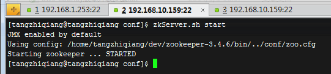
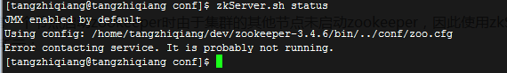
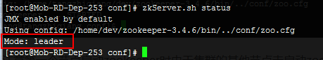
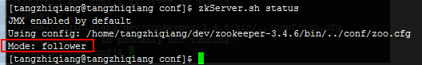
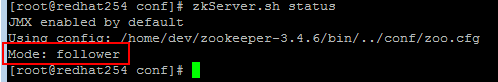

3.解压zookeeper
#tar -zxvf zookeeper-3.4.6.tar.gz
4.将解压后的zookeeper放到指定目录
主机：192.168.10.159
#mv zookeeper-3.4.6 /home/tangzhiqiang/dev
主机：192.168.1.253
#mv zookeeper-3.4.6 /home/dev
主机：192.168.1.254
#mv zookeeper-3.4.6 /home/dev
5.修改zoo.cfg文件，这里以（192.168.10.159）环境为例，其他机器的zookeeper配置一样
进入到zookeeper-3.4.6的conf目录下
#cd /home/tangzhiqiang/dev/zookeeper-3.4.6
#cp zoo_sample.cfg zoo.cfg
#vi zoo.cfg
文件内容如下（黑体加粗为主要配置项）：
======================================================
# The number of milliseconds of each
tick
tickTime=2000
# The number of ticks that the initial
# synchronization phase can take
initLimit=10
# The number of ticks that can pass between
# sending a request and getting an acknowledgement
syncLimit=5
# the directory where the snapshot is stored.
# do not use /tmp for storage, /tmp here is just
# example sakes.
dataDir=/home/tangzhiqiang/dev/zookeeper
# the port at which the clients will connect
clientPort=2181
#master and node config
server.1=192.168.10.159:2888:3888
server.2=192.168.1.253:2888:3888
server.3=192.168.1.254:2888:3888
# the maximum number of client connections.
# increase this if you need to handle more clients
#maxClientCnxns=60
#
# Be sure to read the maintenance section of the
# administrator guide before turning on autopurge.
#
# http://zookeeper.apache.org/doc/current/zookeeperAdmin.html#sc_maintenance
#
# The number of snapshots to retain in dataDir
#autopurge.snapRetainCount=3
# Purge task interval in hours
# Set to "0" to disable auto purge feature
#autopurge.purgeInterval=1
==========================================================
备注：配置完后可以启动zookeeper，为了自动创建dataDir(zoo.cfg中配置的路径),不然启动前要手动创建dataDir,方面myid的创建。 端口2181，设置dataDir为一个指定目录存放zookeeper的协调数据，最后添加集群中的节点。
6.设置myid
根据zoo.cfg中server.X的号码在相应的节点上的dataDir下建立myid文件，输入自身的“X”作为内容即可，比如192.168.10.159节点的myid输入1即可,192.168.1.253节点的myid输入2即可...
7.设置zookeeper环境变量：
为了方便运行zkServer.sh脚本，我们将zookeeper的bin路径加入到/etc/profile中，作为一个全局变量进行输出到PATH中，记得修改完成之后运行source /etc/profile使修改生效，这里以主机192.168.10.159配置为例，其他主机配置类似：
#sudo vi /etc/profile
添加内容如下：
export ZOOKEEPER_HOME=/home/tangzhiqiang/dev/zookeeper-3.4.6
export PATH=$ZOOKEEPER_HOME/bin:$PATH
#sudo source /etc/profile
8.重复上边步骤配置另外两台(192.168.1.253,192.168.1.254)的zookeeper环境
9.运行zkServer.sh 在所有节点上分别运行zkServer.sh start命令：

这里需要注意第一个节点启动zookeeper时由于集群的其他节点未启动zookeeper，因此使用zkServer.sh status命令查看当前状态时会提示错误，如图所示：

但是随着后续节点的zookeeper的陆续启动，使用status查看状态时会显示当前节点的状态，本次192.168.1.253被选为了leader，宁外两台被选为了follower，如图：



这样zookeeper集群环境搭建完毕。